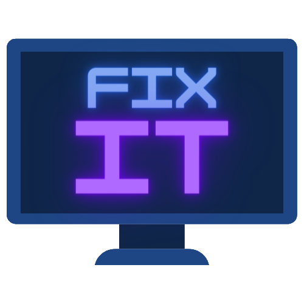

Created by Orla Walsh, Jemma Walsh, Liam Canning and Adam Doyle


Copyright © 2022
|  |
FixIT |
|---|
Established in 2007, FixIT have succeeded in the I.T Section throughout the nation. What began out as a pastime has now grown into our passion and we're thrilled to share it with you. We offer quality repairs at reasonable prices. Our passionate desire for repairing what’s broken has taken us to the face of the computer repair industry. We specialise in computer repair and laptop repair with Apple and Microsoft qualified engineers. Our store supplies a wonderful selection of peripheral devices, so if you need a keyboard, mouse, cables, fans and more, we're here to help you. Our computer repair engineers possess over 10 years’ experience in the I.T repair and preservation field so your laptop repair, pc repair, mac repair or data recovery is in good hands.
We off many different services to our clients. Some of these services include but are not limited to Screen Repair, Virus Removal Services, Data Recovery & Transfer,Screen, Battery & Keyboard Replacement, Software Installations, Computer Upgrades, Hard Drive Testing, Data Management/Migration, Operating System Upgrades/ Downgrade and Updates.
If you have a problem with your PC, laptop or Mac we will try to fix it... and if we can't there is no charge!
We also offer tracking on all repairs that will give our clients the ability to see how far along the repair is.
Here at FixIT, we are a small team of software developers and computer repair enthuasits. We have our managers who set up the business in 2007, Mark and John, our senior computer specialists, Sarah, Paul and Eric and finally we have our admin staff that consists of Racheal and April.
These amazing team members are the reason the business was a success and the reason we can bring to you the best quality repairs.